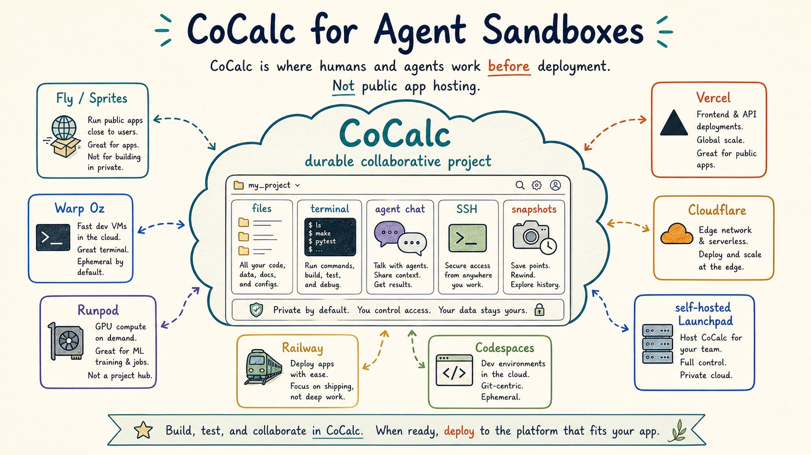
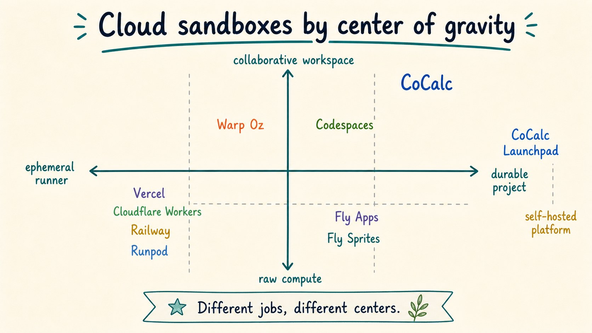
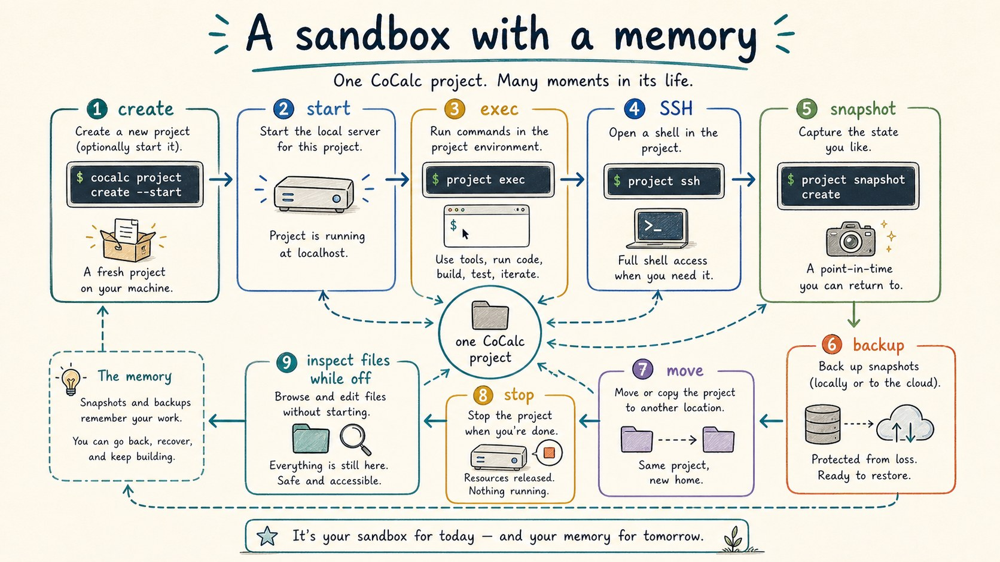
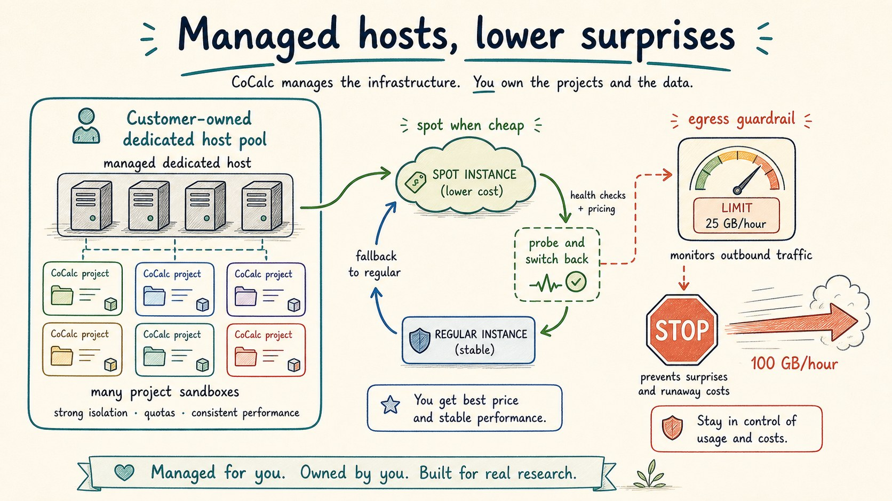
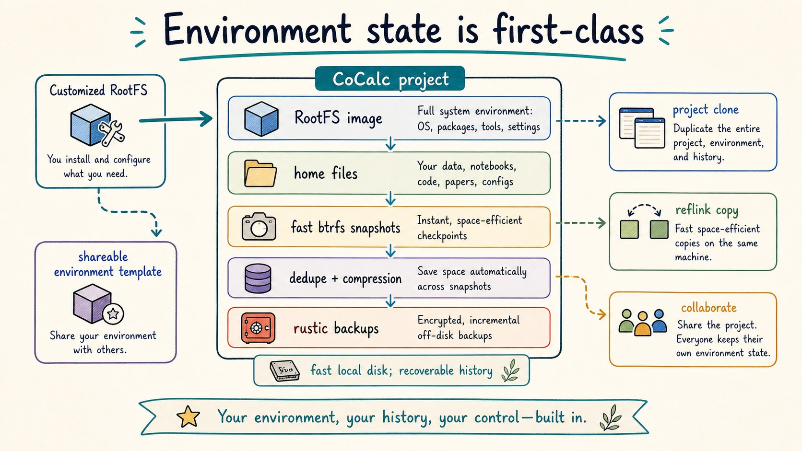
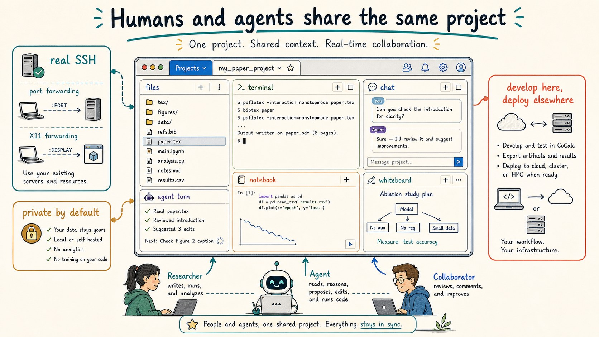

A CoCalc-AI field guide for agent infrastructure
CoCalc for Agent Sandboxes
CoCalc-AI is not mainly a place to publish public apps. It is a durable collaborative project cloud: fast Linux workspaces where humans and agents can run code, keep files, use real SSH, take snapshots, manage environments, and move work forward together.

Coding agents changed what a "sandbox" needs to be. A useful agent workspace is not just a one-shot command runner. It needs a real filesystem, installed tools, durable output, cheap start/stop, recovery points, a way for humans to inspect what happened, and a path to run many environments without hand-administering every machine.
CoCalc's primitive is the project. A project can be stopped, started, searched, opened in a browser, reached by SSH, snapshotted, backed up, moved to another host, assigned a RootFS image, and shared with an agent or another person. That is a different center of gravity from a public app host, a raw GPU rental, or a disposable execution API.
Do not confuse project clouds with app hosting
Vercel, Railway, Fly apps, and Cloudflare Workers are excellent when the goal is to deploy a public service. That is not CoCalc's main job. CoCalc is where you develop, test, inspect, collaborate, and let agents work inside private project environments. Public deployment can happen elsewhere.
Runpod and GPU clouds are closer to raw compute. Codespaces is closer to editor-first development environments. Fly's Sprites and Warp Oz point toward a newer idea: agents need durable working computers. CoCalc sits in that same conversation, but with a collaborative project UI, real SSH, RootFS management, snapshots, backups, and self-hosted deployment paths.

A sandbox with a memory
A CoCalc project has a lifecycle. Create it from a RootFS image, start it, run a command, open a browser workspace, SSH into it, snapshot it, back it up, stop it, and still inspect its files while the compute is off.
cocalc project create demo --rootfs-image ubuntu --start
cocalc project exec --project demo --bash "pytest -q"
cocalc project ssh --project demo
cocalc project snapshot create -w demo
cocalc project backup create -w demoThat matters for agents. An agent turn can leave a trail: files, logs, commits, terminal output, chat messages, and recoverable project state. The sandbox is not just a process that disappeared.

Run many projects on managed dedicated hosts
One strong CoCalc shape is a managed dedicated host. A customer can have a VM dedicated to their work, run many project sandboxes on it, and avoid becoming the system administrator of that VM. CoCalc handles the host lifecycle and project placement.
This creates a useful economic middle ground: better isolation and predictability than a shared public pool, but with pricing close to standard cloud rates instead of per-sandbox mystery pricing.
Spot instances matter too. CoCalc can use cheap spot capacity, fall back to regular instances when spot is unavailable, and later probe for spot again. Egress guardrails are part of the same story: if a project suddenly starts sending huge traffic, CoCalc can surface and control that before the cloud bill becomes the first alert.

Treat environments as product state
Many sandbox products begin with a container image and stop there. CoCalc has a broader environment model. RootFS images are selected when projects are created. Users and admins can build reusable environments for courses, teams, demos, or agent workloads.
Underneath, CoCalc leans on local filesystem machinery that is valuable for this workload: fast Btrfs snapshots, project cloning, reflink copies, compression, deduplication, and deduplicated external backups with Rustic. The user-facing point is simple: project state is fast to copy, cheap to preserve, and recoverable.

Let humans and agents share the same project
A browser-based project UI is not just a convenience layer. It is how a person can inspect what the agent is doing: open files, watch terminals, read chat, review commits, run notebooks, and share the same state with another collaborator.
CoCalc also provides real SSH to projects through
sshpiperd. That means normal SSH workflows, including
port forwarding and X11 forwarding, fit beside the browser UI
instead of being replaced by a narrow web shell.
The intended pattern is often: build and test in CoCalc, then deploy public services somewhere designed for public serving. That is the same pattern these guides use: the work happens in CoCalc; the published site lives on GitHub Pages.

Know the trust model
CoCalc projects are for working environments first, not public app deployment as the default story.
Projects run in locked-down rootless Podman containers, trading microVM isolation for higher density and lower cost.
Snapshots, backups, clones, and file access while stopped make the sandbox feel less disposable.
Launchpad packages the platform into one small SEA binary with embedded PGlite; Rocket is the scale-up path.
Who should care?
CoCalc's sandbox-cloud story is interesting for teams that run many agent experiments, companies that want durable developer workspaces, research groups with long computations, educators teaching Linux or programming, and operators who want their own agent workspace cloud without building the platform from scratch.
Hosted CoCalc gives the managed version. CoCalc Plus gives one user a local or SSH-backed workspace. Launchpad gives a small group its own self-hosted site with an unusually simple installation. Rocket is the enterprise-scale version of the same idea.
Good fits
- Agent coding runs that need real files and recovery points.
- Teams that want many durable Linux sandboxes on managed hosts.
- Courses and workshops where everyone needs the same environment.
- Private clouds that need collaboration without public app hosting.
Product names here are used descriptively. The goal is orientation, not ranking. For current details, read the public pages for Fly Sprites, Warp Oz, Runpod, Railway, GitHub Codespaces, Vercel, and Cloudflare Workers. CoCalc-specific details come from the CoCalc-AI source, including the project CLI, file server, SSH proxy, RootFS, backup, and host-management code.